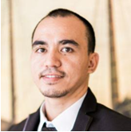

Ponce Anthony G. Acebu

Summary
I am a skill dynamic individual with technical background of Software Testing, Maintenance and Property Management. I enjoy learning new skills
Education
- Bachelor of Science in Electronics and Communications Engineering
Work Experience
Freelance Tester- Utest.com
June 2022-Present
- Web and Mobile Testing applications
- Create and document test cases
- Execute manual tests (Exploratory testing, Functional testing)
- Log bugs and defects
- Understand acceptance criteria for the in scope and out of scope functionalities
Property Management Officer- Sterlingland Residences Development Inc.
January 2023 – Present
- Assist customer care and engineering departments during punch listing and turnover activities of each development, and to readily support post-turnover warranty
- Organize, orient, and assist homeowners’ association, and develop and maintain a harmonious relationship with homeowners.
Engineering Officer, Property Engineer- Ayala Property Management Corporation
September 2018 - January 2023
- Responsible for the provision of and supervision over the Electrical/Mechanical/Plumbing Maintenance functions and services to the Condo Corp as part of the Property Management services
Instrument Technician- Qatar Construction Engineering Company LLC
August 2014 - August 2016
Skills
- Manual and Functional Testing
- Troubleshooting
Certifications
- Electronics Engineering Licensure Examination Board Passer April 2012
- The Complete 2023 Software Testing Bootcamp (30 hrs) Udemy Completion date: December 23, 2023
Other